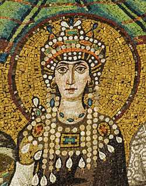
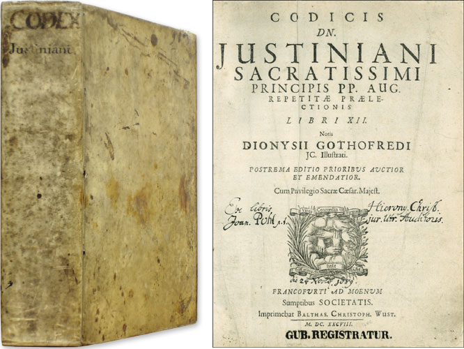

Theodora was the wife of Justinian and served as the empresses of the Byzantine empire. Many citizens actually felt that she was the one ruling the empire and following her death very little legal material was passed.
In her past life she was an actress involved in a very exotic form of theater known as mime which involves a great deal of nudity. Her call to fame was her take on the myth of Leda and the Swam where during her show geese would eat barley that had been positioned on her groin. The photo presented here is a painting of the event. In the far background you can see a temple as a reminder that it is Zeus involved. The area is surrounded by vegetation as if to make the whole scene more secluded.
Using her sway and attractiveness she was able to get Justinian to change the law so that she would be able to marry him. Her influence within the marriage allowed her to do a great number of things such as putting down rebellions such as was the case with the Nika Revolt. She also improved women’s rights within the empire. Lastly she was a Christian convert. The changes made to Roman law were writen in the Justinian code pictured on the right.
